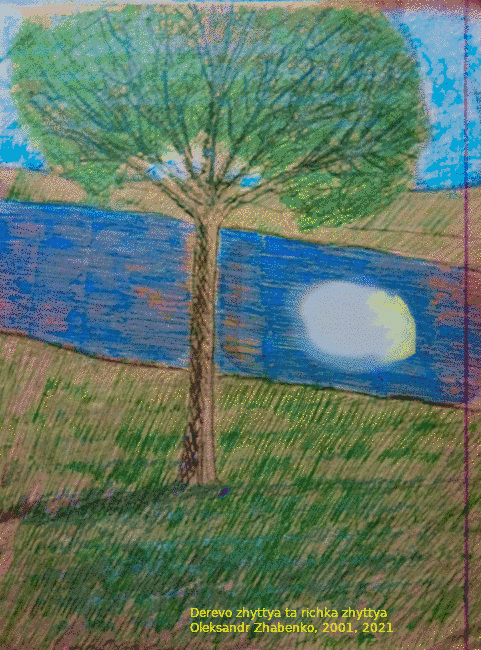

Слава Ісусу Христу!
Ми шануємо Хрест Господній як Животворящий, але не сам по собі, а у Господі, Його дією, Його силою.
Коли Господь творив людину, то Вдихнув у її ніздрі (обличчя) дихання життя,
і стала людина душею живою
(Буття 2:7). Так описано створення душі людини.
Дія Святого Духа, яка через ніздрі
(символічно щось, що приймає дихання, через
що проходить дихання) дарує сотворене життя, тобто сотворене життя здобуває свої досконалості (зокрема
існування, життя, рух, див. наприклад, Діяння 17:25; Ісайї 42:5: Господь Бог …
дав дихання народові, якій на ній, і дух тим, хто ходить по ній
)
від несотвореного Життя, від Божої благодаті, від Духа Святого.
Стільки Господь заклав у нього Своєї премудрості, стільки сили,
такий глибокий Божий задум щодо нього, у ньому, що до цього задуму
можна звертатися, наче до когось. Тому хоча Хрест не має душі,
як і інші речі, апостол каже: Бо й бездушні речі, які видають звук, –
чи то сопілка, чи то арфа, – якщо вони не звучать по-різному,
то як зрозуміти, що грає або що звучить?
(1 Коринтян 14:7),
але ми вітаємо Хрест словами: Радуйся!
.
Про дар Святого Духа молимося завжди Господу як Подателю Святого Духа, молимося Самому Духові як Господу. Просимо святих апостолів, щоб молилися про цей дар також для нас. До Хреста ж не звертаємося з такими проханнями, бо він не має душі, не може тому молитися до Бога. Задум, сила, премудрість Господні у ньому, але сам він без душі, тому через нього подається дар Святого Духа, але не він подає, а Господь.
Написано та опубліковано 27.09.2021 р. на свято Воздвиження чесного животворчого Хреста Господнього.
